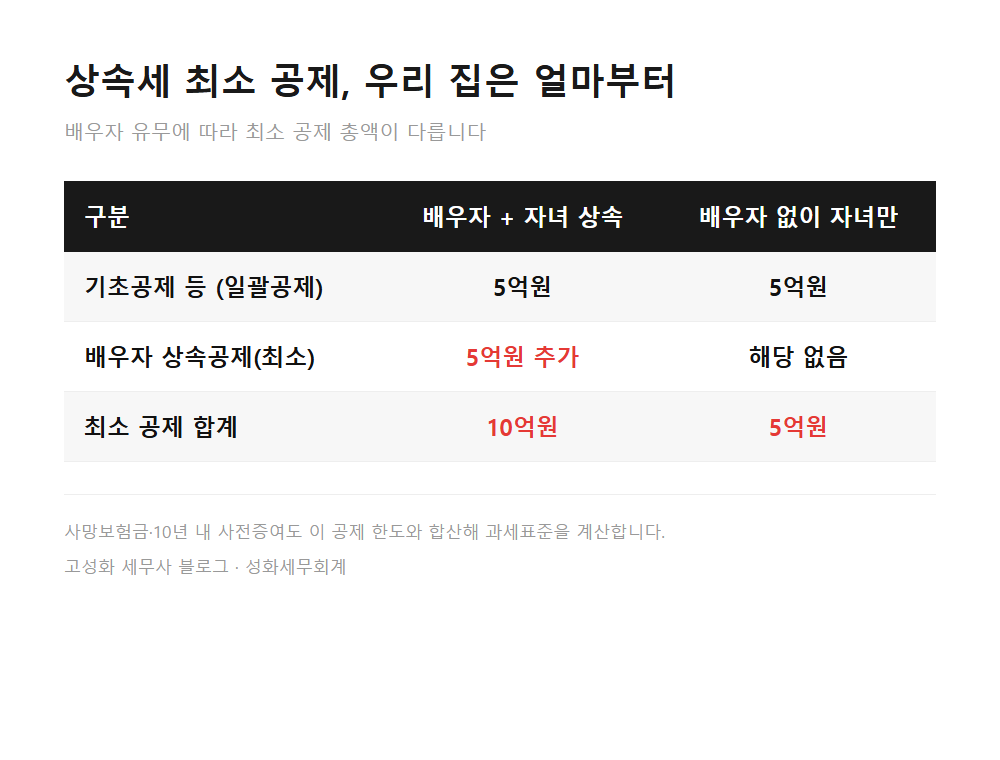
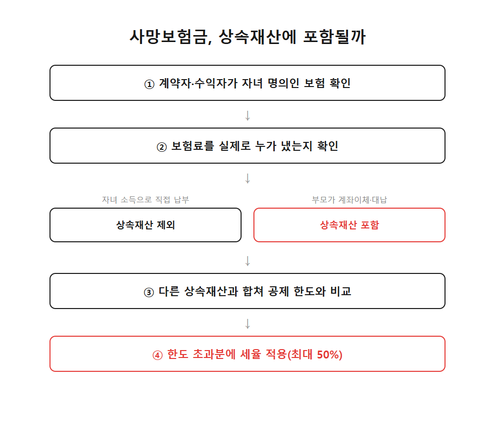

종신보험 계약자 자녀 상속세 붙는 진짜 기준

최근 상담 중에 이런 질문을 자주 받습니다. 아버지 종신보험을 계약할 때 계약자와 수익자를 자녀 이름으로 해뒀는데, 이러면 나중에 상속세가 안 붙는 게 맞느냐는 것입니다.
세무 상담을 하다 보면 명의를 바꿔두는 것만으로 세금이 정리된다고 믿으시는 분들이 생각보다 많습니다. 계약서상 이름이 누구인지는 크게 중요하지 않습니다. 국세청이 보는 건 실제로 보험료를 누가 냈느냐입니다.
이 글을 보고 계신 분은 아마 셋 중 하나에 해당하실 겁니다. ① 부모님 종신보험 계약자를 자녀로 미리 바꿔뒀거나 ② 지금 새로 가입하면서 명의를 어떻게 할지 고민 중이거나 ③ 이미 부모님이 돌아가셔서 보험금을 받았는데 상속세 신고를 어떻게 해야 할지 막막하신 경우입니다. 어느 쪽이든 핵심은 하나, 보험료를 누구 돈으로 냈는지입니다.
- 계약자가 자녀여도 상속재산에 포함되는 이유
- 얼마부터 상속세가 실제로 나오는가
- 실무에서 자주 하는 오해
한눈에 보기


자주 묻는 질문
계약자를 자녀로만 바꾸면 상속세를 아예 안 낼 수 있나요?
아닙니다. 계약자 명의보다 실제 보험료를 낸 사람을 봅니다. 부모가 냈다면 계약자가 자녀여도 상속재산으로 들어갑니다.
우리 집 재산이 공제 한도보다 적은 것 같은데 그래도 확인이 필요한가요?
네. 부동산은 시세로 평가되고, 10년 내 사전증여와 사망보험금도 합쳐집니다. 서류상 공시가격만 보고 안심하셨다가 실제 계산에서는 한도를 넘는 경우가 많습니다.
지금부터라도 자녀 소득으로 보험료를 내면 괜찮은가요?
앞으로 낼 보험료는 그렇게 하시는 게 맞습니다. 다만 이미 낸 부분은 그대로 판단 대상이라, 처음 가입 때부터 누구 돈으로 냈는지 기록을 정리해두시는 편이 낫습니다.
정리하면
정리하자면, 종신보험의 계약자를 자녀로 해둔 것만으로는 상속세를 피할 수 없습니다. 실제로 보험료를 낸 사람이 누구인지가 기준이고, 공제 한도를 넘는지는 부동산 평가, 사전증여 합산, 보험금 포함 여부를 함께 계산해야 알 수 있습니다.
이미 계약자를 자녀로 바꿔서 몇 년째 유지하고 계신 분들은 이제 와서 뭘 어떻게 되돌려야 하나 막막하실 수 있습니다. 그런데 지났다고 방법이 없는 게 아닙니다. 지금부터 보험료 부담 주체를 정리하고, 필요하면 사전증여 신고로 보완하는 방법이 남아 있는 경우가 대부분입니다.
우리 집이 공제 한도 안에 있는지, 지금 보험 구조를 어떻게 정리하면 좋을지는 재산 구성을 놓고 직접 계산해봐야 정확합니다. 편하게 문의 주시면 함께 살펴보겠습니다.
본문 전체와 근거 조문은 블로그에서 확인하실 수 있습니다.